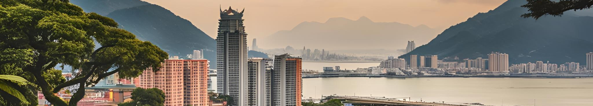
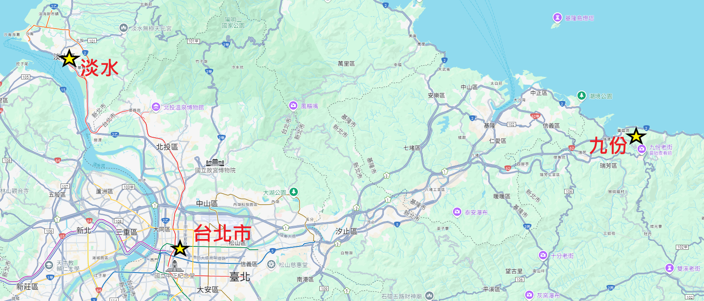

台北
台北氣候特徵
台北是台灣的首都，位於亞熱帶地區，氣候溫暖潮濕，四季變化較不明顯。由於盆地地形和海洋調節，台北的氣候具有獨特的亞熱帶特徵。台北是台灣的首都，位於亞熱帶地區，氣候溫暖潮濕，四季變化較不明顯。由於盆地地形和海洋調節，台北的氣候具有獨特的亞熱帶特徵。
14℃
冬季平均低溫
35℃
夏季平均高溫
2400mm
年均降水量
四季氣候特點
春季（3月-5月）： 溫暖多雨，3月仍有涼意，4月起氣溫回升，陽明山花季開始，杜鵑花盛開。
夏季（6月-8月）： 炎熱潮濕，午後常有雷陣雨，平均氣溫約28-33℃，需注意防曬和補充水分。
秋季（9月-11月）： 天氣轉涼但仍溫暖，10月是最舒適的季節，適合戶外活動和品嘗秋蟹。
冬季（12月-2月）： 涼爽少雨，偶有寒流來襲，陽明山可能出現短暫降雪，是泡溫泉的好時節。
旅遊景點推介
精選相片
按此放大
台北地圖，顯示了台北芇、淡水及九份的位置。
必吃美食：阿宗麵線（大腸麵線）、成都楊桃冰、西門金鋒滷肉飯。
必吃美食：阿柑姨芋圓、賴阿婆芋圓、紅糟肉圓、草仔粿。
必吃美食：阿給（油豆腐包冬粉）、淡水魚酥、巨無霸霜淇淋、鐵蛋。
必吃美食：福州世祖胡椒餅、陳董藥燉排骨、東發號蚵仔麵線。
必吃美食：劉芋仔蛋黃芋餅、環記麻油雞、豬肝榮仔豬肝湯。
台北地圖，顯示了台北芇、淡水及九份的位置。
西門町
西門町是台北最熱鬧的年輕潮流聖地，充滿街頭文化、購物商場與特色小店，還有電影街和表演藝術空間，夜晚更是霓虹閃耀。必吃美食：阿宗麵線（大腸麵線）、成都楊桃冰、西門金鋒滷肉飯。
九份
九份是山城小鎮，保留日治時期建築與懷舊風情，夜晚紅燈籠點亮老街，宛如《神隱少女》場景，可遠眺基隆嶼與海景。必吃美食：阿柑姨芋圓、賴阿婆芋圓、紅糟肉圓、草仔粿。
淡水老街
淡水是浪漫的河岸小鎮，擁有百年紅毛城、淡水老街與夕陽美景，沿著淡水河散步或搭渡輪至八里，悠閒愜意。必吃美食：阿給（油豆腐包冬粉）、淡水魚酥、巨無霸霜淇淋、鐵蛋。
饒河夜市
饒河夜市是台北必訪夜市之一，以慈祐宮為起點，聚集眾多傳統小吃與遊戲攤位，人潮熱絡卻不失在地風味。必吃美食：福州世祖胡椒餅、陳董藥燉排骨、東發號蚵仔麵線。
寧夏夜市
寧夏夜市規模較小但美食密集，被譽為「台北人的胃」，以經典臺味小吃聞名，環境整潔且交通便利。必吃美食：劉芋仔蛋黃芋餅、環記麻油雞、豬肝榮仔豬肝湯。
台北美食巡禮 (5日4夜)
主題：舌尖上的台北，探索經典與創新美味
適合人群：吃貨、文青、街拍愛好者
行程特點：夜市+老街+文創小吃+景觀餐廳
• 必吃：阿宗麵線、成都楊桃冰
• 建議：早午餐開始逛吃模式
📍 西門紅樓
• 看點：文創市集+特色茶飲
• 時段：午後避暑好去處
🏨 住宿：西門町商圈飯店
🍽️ 晚餐：老天祿滷味+蜂大咖啡
• 重點：魚酥、阿給、鐵蛋三連擊
• 交通：捷運淡水信義線直達
📍 漁人碼頭
• 看點：情人橋景觀餐廳
• 推薦：夕陽時段海鮮套餐
🚆 晚間：捷運返回市區
• 行程：08:00包車出發避人潮
• 必吃：芋圓、紅糟肉圓、草仔粿
📍 阿妹茶樓
• 特色：千與千尋場景+茶點套餐
• 時段：午後山城品茗時光
🚐 傍晚：返回台北市區
• 看點：胡椒餅、藥燉排骨
• 策略：17:00開攤先衝排隊名店
📍 寧夏夜市
• 必吃：蚵仔煎、環記麻油雞
• 交通：兩夜市間捷運+步行15分
🏨 住宿：大同區特色旅店
• 選擇：鼎泰豐本店/芒果冰/牛肉麵
• 策略：10:30避開午餐人潮
📍 華山文創園區
• 看點：特色咖啡廳+文青甜點
✈️ 午後：準備返程
• 九份行程：建議包車或搭基隆客運
• 夜市穿梭：利用YouBike+捷運組合
美食策略
• 多人分食：每攤買小份量增加品項
• 現金準備：夜市只收現金且百元鈔為主
時間管理
• 夜市黃金時段：17:00-19:30人潮較少
• 九份回程：建議16:00前離開避塞車
行前準備
• 服裝：舒適防滑鞋+透氣衣物
• 配件：隨身小風扇+環保餐具
適合人群：吃貨、文青、街拍愛好者
行程特點：夜市+老街+文創小吃+景觀餐廳
🍜 第1天：西門町潮流美食｜台北味覺初體驗
📍 西門町徒步區• 必吃：阿宗麵線、成都楊桃冰
• 建議：早午餐開始逛吃模式
📍 西門紅樓
• 看點：文創市集+特色茶飲
• 時段：午後避暑好去處
🏨 住宿：西門町商圈飯店
🍽️ 晚餐：老天祿滷味+蜂大咖啡
🌊 第2天：淡水夕照美食｜河岸風味全日
📍 淡水老街• 重點：魚酥、阿給、鐵蛋三連擊
• 交通：捷運淡水信義線直達
📍 漁人碼頭
• 看點：情人橋景觀餐廳
• 推薦：夕陽時段海鮮套餐
🚆 晚間：捷運返回市區
🏮 第3天：九份山城饗宴｜懷舊小吃巡禮
📍 九份老街• 行程：08:00包車出發避人潮
• 必吃：芋圓、紅糟肉圓、草仔粿
📍 阿妹茶樓
• 特色：千與千尋場景+茶點套餐
• 時段：午後山城品茗時光
🚐 傍晚：返回台北市區
🌃 第4天：雙夜市制霸｜從饒河到寧夏
📍 饒河夜市• 看點：胡椒餅、藥燉排骨
• 策略：17:00開攤先衝排隊名店
📍 寧夏夜市
• 必吃：蚵仔煎、環記麻油雞
• 交通：兩夜市間捷運+步行15分
🏨 住宿：大同區特色旅店
🍵 第5天：文青早午餐｜台北完美收官
📍 永康街商圈• 選擇：鼎泰豐本店/芒果冰/牛肉麵
• 策略：10:30避開午餐人潮
📍 華山文創園區
• 看點：特色咖啡廳+文青甜點
✈️ 午後：準備返程
⚠️ 實用備註
交通建議• 九份行程：建議包車或搭基隆客運
• 夜市穿梭：利用YouBike+捷運組合
美食策略
• 多人分食：每攤買小份量增加品項
• 現金準備：夜市只收現金且百元鈔為主
時間管理
• 夜市黃金時段：17:00-19:30人潮較少
• 九份回程：建議16:00前離開避塞車
行前準備
• 服裝：舒適防滑鞋+透氣衣物
• 配件：隨身小風扇+環保餐具
其他網上行程建議(只供參考!)
;nbsp;


- ©2025 Copyright by Raymond Chau -